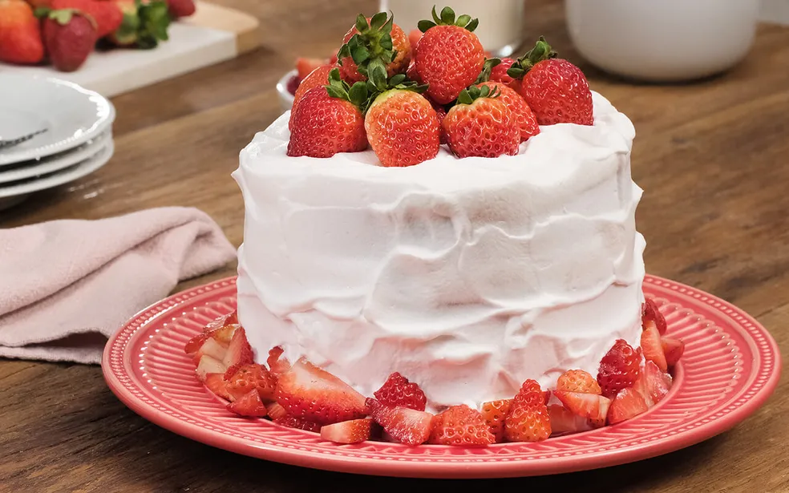

Voltar
Bolo de Morango
O bolo de morango com chantilly é uma receita que combina com aniversário e ocasiões especiais.
Ele pode ser uma oportunidade também de ganhar uma renda extra com venda de bolos.

Ingredientes
Massa
- 1 xícara (chá) de água
- 1 xícara (chá) de Nesquick
- 4 colheres (sopa) de manteiga
- 3 ovos
- 1 e 1/2 xícaras (chá) de açúcar
- 3 xícaras (chá) de farinha de trigo
- 1 colher (sopa) de fermento em pó químico
- Manteiga e farinha de trigo para untar
- 10 morangos cortados ao meio para decorar
Ingredientes
Calda
- 1 caixa de morangos picados (300g)
- 1 xícara (chá) de açúcar
- Suco de 1 limão
Modo de Preparo
Massa
- No liquidificador, bata a água, o Nesquick®, a manteiga, os ovos e o açúcar até ficar
homogêneo. Transfira para uma tigela, adicione a farinha e o fermento e misture com uma
colher. Despeje em uma fôrma de buraco no meio de 30 cm de diâmetro untada e
enfarinhada e leve ao forno médio, preaquecido, por 35 minutos ou até dourar. Retire e deixe
esfriar. Para a cobertura, em uma panela misture o morango, o açúcar e o suco de limão. Leve
ao fogo baixo e deixe levantar fervura. Cozinhe por 5 minutos e deixe esfriar. Desenforme o
bolo, cubra com metade da cobertura, arrume os morangos cortados ao meio sobre o bolo e cubra com a cobertura restante. Sirva em seguida.